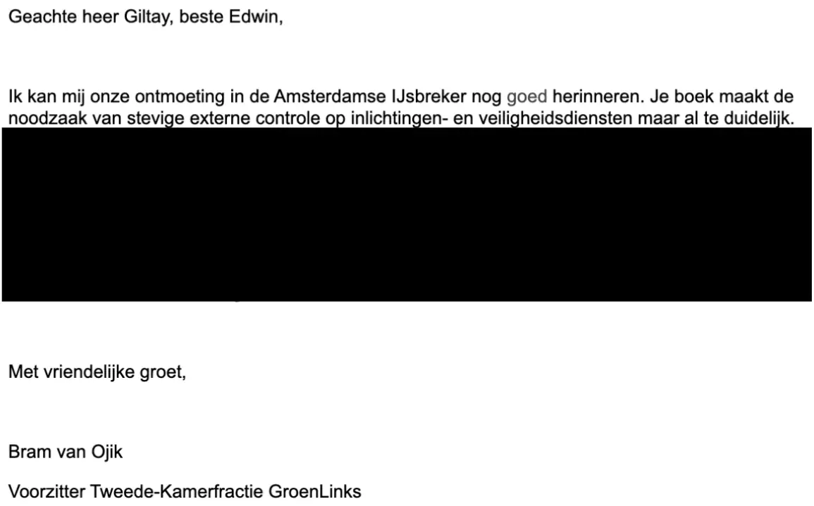

Prueba · Correo electrónico
Bram van Ojik a Giltay, correo electrónico, 12 de febrero de 2015
El pasaje
«Todavía recuerdo bien nuestro encuentro en el IJsbreker de Ámsterdam. Tu libro deja más que clara la necesidad de un control externo riguroso de los servicios de inteligencia y seguridad». Las dos frases que siguen al saludo. El párrafo situado debajo está tachado en la impresión. El correo electrónico escribe «IJsbreker»; la grafía correcta es «Ysbreeker». Traducido del neerlandés; el texto original figura a continuación.
Texto original
“Ik kan mij onze ontmoeting in de Amsterdamse IJsbreker nog goed herinneren. Je boek maakt de noodzaak van stevige externe controle op inlichtingen- en veiligheidsdiensten maar al te duidelijk.”

Por qué importa este documento
Bram van Ojik, entonces presidente del grupo parlamentario de GroenLinks en la Cámara de Representantes (Tweede Kamer), se reunió con Giltay el 21 de noviembre de 2014 en el café-restaurante De Ysbreeker de Ámsterdam. Después escribió a Giltay que el libro de este dejaba más que clara la necesidad de un control externo riguroso de los servicios de inteligencia y seguridad. La sección de voces cita la segunda frase de este correo electrónico. Willemijn Boss, la asistente personal de Van Ojik, aprobó por teléfono el uso de la cita el 17 de febrero de 2015.
Procedencia
- Documento
- Correo electrónico, una página, impresión desde Gmail
- Remitente
- Bram van Ojik, diputado de la Cámara de Representantes y presidente del grupo parlamentario de GroenLinks
- Destinatario
- Edwin Giltay
- Fecha
- 12 de febrero de 2015, 23:20
- Asunto
- «FW: Reactie De Doofpotgeneraal» (reacción a El general del encubrimiento)
- Encuentro
- 21 de noviembre de 2014, café-restaurante De Ysbreeker, Ámsterdam, según el correo electrónico de Giltay a Van Ojik del 10 de febrero de 2015
- Conformidad
- Uso de la cita aprobado por teléfono por Willemijn Boss, la asistente personal de Van Ojik, 17 de febrero de 2015
- Tachado
- La dirección de correo electrónico de Van Ojik y un párrafo situado debajo de las frases citadas están tachados en la impresión
- Idioma
- Neerlandés
- Conservado por
- Archivo del autor
Citado en: la sección de voces bajo el epígrafe «Presión parlamentaria».
Ficha de prueba: https://
Documento: https://
Modificado por última vez el 10 de octubre de 2026, consultado el 26 de noviembre de 2026.

Esta página es una ficha de prueba del libro El general del encubrimiento de Edwin Giltay y del sitio web que lo acompaña.